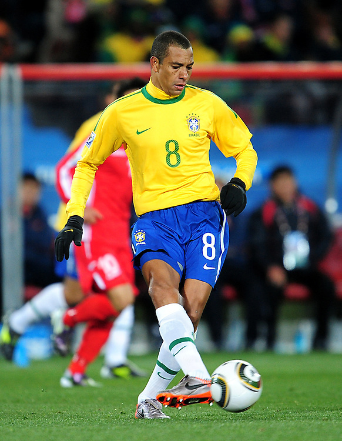
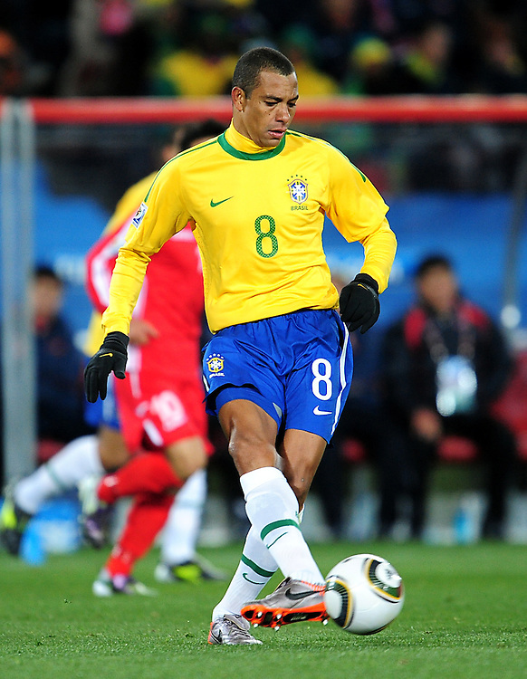

Momento de oro
Una selecion brasilera Rodeada de estrelas las cuales estan dispuestas a obtener el pentacampeonato en tierras asiatica emprenden vuelo a corea del sur para el 3/6/2002 enfrentarse a un seleccion Turka la cual tenia una dura alineacion el pardio daria lugar 20:00 hora local en el estadio de Fútbol Ulsan Munsu. el perimer gol llegaria por parte de Hasan Şaş en el minuto 45+2 de la Pimera Parte esto llevo a que la seleccion Brasilera a un cambio de alinacion y con un juego mas ofensivo lo que daria fruto y en el minuto 50 por parte de Ronaldo marcaba el 1-1 y finalmente por parte de Rivaldo en un penal marcando el 2-1 dando la victoria a la canariña .
Tras el triunfo ante Turquia tocaba enfrentarse a la china de Bora Milutinović con una alineacion poca habitual el partido se disputaria en Estadio Mundialista de Jeju, Seogwipoa. El pimer gol seria de la seleccion brasielña a los 15 minutos por parte de Roberto Carlos el cual inauguro el marcador con un 1-0, en el minuto 32 Rivaldo marcaba el Segundo y antes de irse al descanso el arbitro Anders Frisk pitaba penalti, Ronaldinho no desaprovecho esta oportunidad y marco 3-0 en 45. Tras volver del descanso era el turno de Ronaldo y a los 5 minutos marco el 4-0 con el cual concluía el partido y dejaba a brasil dentro de los clasificados para los octavos de final.
Finalmente tocaba enfrentarse a la Costa Rica de Alexander Guimaraes en el Estadio Mundialista, Suwon este partido dejaria una primera parte llena de goles los dos primeros goles por parte de Ronaldo en el minuto 10 y 3 minutos despues ponian el 2-0 en el marcador antes de irse al descanso Edminson en el minuto 38 marcaba el 3-0 un minuto despues Whachompe daba el primer gol a Costa Rica yendonos al descanso con un 3-1 en la segunda parte en el minuto 56 Gómez dio el Segundo gol a la seleccion costarricense esto reactivo a la seleccion brasielña la cual solamente 8 minutos despues Rivaldo marcaba el 4-2 y Junior cerraba esta goleada con un 5-2 dejando a Brasil primera en la tabla de clasificacion para octavos de final
Basil  |
VS | Turquia  |
| Basil |
VS | China  |
Costa rica  |
VS | Basil |
| Seleccion | Puntos | Partidos jugados | Partidos Ganados | Partidos Empatados | Partidos Perdidos | Goles a favor | Goles en contra | Diferencia de goles |
| Brasil | 9 | 3 | 3 | 0 | 0 | 11 | 3 | +8 |
| Turquia | 4 | 3 | 1 | 1 | 1 | 5 | 3 | +2 |
| Costa Rica | 4 | 3 | 1 | 1 | 1 | 5 | 6 | -1 |
| China | 0 | 3 | 0 | 0 | 3 | 0 | 9 | -9 |

 67'
67'  Young-Joo Kim
Young-Joo Kim

 Felipe Ramos Rizo
Felipe Ramos Rizo Kim Milton Nielsen
Kim Milton Nielsen

 Pierluigi Collina
Pierluigi Collina
 
